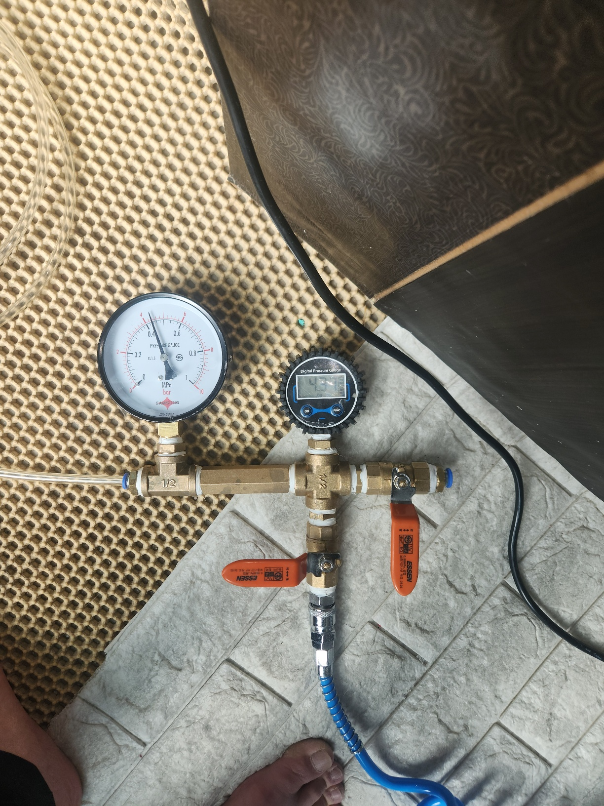

보일러 난방을 켤 때마다 바닥 일부가 유독 따뜻하고 축축하다는 신고를 받고 출동한 현장입니다.
보일러 배관은 바닥 콘크리트 아래 매립되어 있어 겉으로는 확인이 불가능하기 때문에, 가장 먼저 보일러공압검사를 진행했습니다. 난방 배관에 일정 압력의 공기를 주입하고 압력게이지로 시간에 따른 압력 변화를 확인하는 방법인데, 게이지 압력이 시간이 지날수록 조금씩 떨어지는 것이 확인되어 난방 배관 어딘가에 누수가 있다는 것을 먼저 진단할 수 있었습니다. 여러 개로 나뉜 난방 라인을 하나씩 잠그고 압력 변화를 비교하는 방식으로 문제가 되는 라인을 좁혀나갔고, 열화상 장비로 바닥 온도 분포까지 함께 확인해 정확한 위치를 특정했습니다.
확인된 구간만 최소한으로 바닥을 개방해 배관을 보수한 뒤, 다시 공압검사로 압력이 정상적으로 유지되는 것을 확인하고 마무리했습니다.
난방을 켰을 때 바닥 특정 구역만 유난히 뜨겁거나 축축하다면 보일러 배관 누수를 의심해 보셔야 합니다. 바닥 공사가 필요한 만큼 빨리 진단받으실수록 공사 범위를 줄일 수 있습니다.
비슷한 증상으로 문의하실 곳을 찾고 계신다면 전화로 접수해 주세요. 접수 건은 확인 후 신속하게 연결해 안내해 드리며, 현장 진단 후 견적에 동의하신 뒤에만 작업이 진행됩니다.